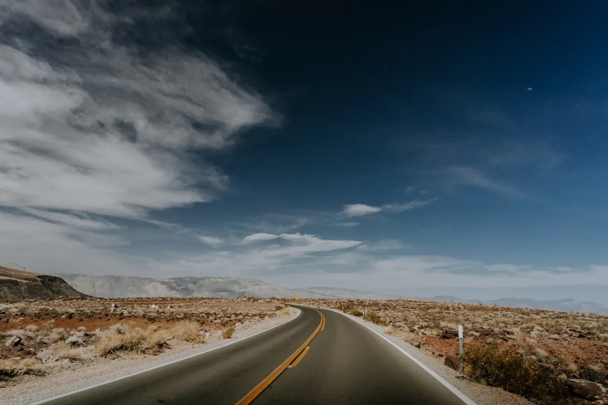
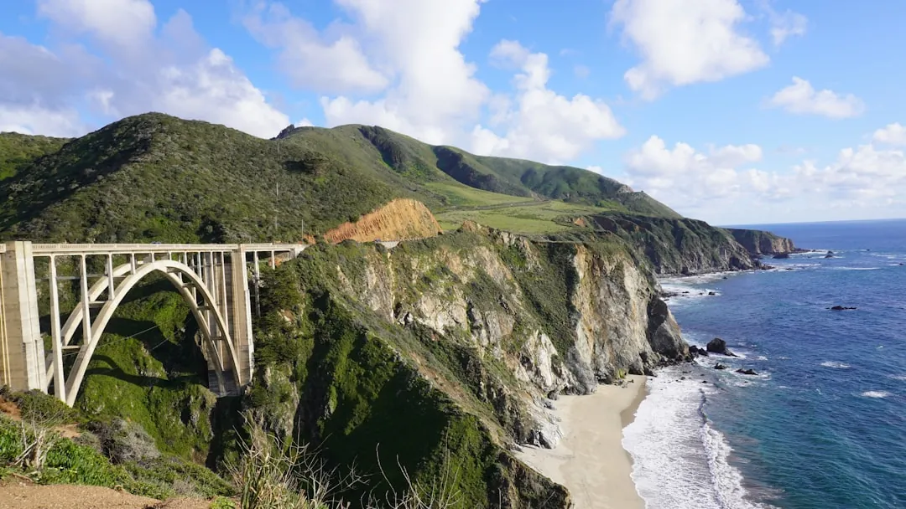

California golf and sightseeing hybrid trips
· By GoldenPath Guide Editorial Team
Half the group wants golf every day and the other half wants the coast, the cities, and the wine. California handles this split better than anywhere else, because every major golf base sits within an hour of world-class sightseeing. The trick is picking a shared base where golfers and non-golfers both start happy, then reuniting for afternoons and dinners.
Hybrid trips fail when golfers vanish at dawn and return at dusk. Cap golf at three to four rounds a week, play mornings only, and keep afternoons shared. Everyone remembers the trip together instead of in two separate versions.
Pick a base both sides love
Monterey works best for mixed groups. Golfers get Pebble Beach, Spyglass Hill, and Bayonet within 20 minutes, while non-golfers get Carmel shops, the Monterey Bay Aquarium on Cannery Row, and the 17-Mile Drive viewpoints. Lodging in Pacific Grove or Carmel puts both sides 10 to 15 minutes from their mornings.
San Diego runs second. Golfers head to Torrey Pines 20 minutes north while the rest of the group takes La Jolla Cove kayaking, Balboa Park museums, or the harbor cruise. Palm Springs suits winter trips, pairing desert golf with the aerial tramway, mid-century architecture tours, and Joshua Tree day trips about 60 minutes east. Our city and itinerary guides detail each base.
- One shared base for the whole trip beats splitting hotels, which doubles packing and halves shared meals.
- Morning golf plus shared afternoons keeps the group together for the best light of the day.
- Non-golfers need one planned highlight per day, not a vague suggestion to relax at the hotel.
- Book lodging with a pool and a real lobby, since both sides need comfortable regroup space.
Mornings apart, afternoons together
Golfers tee off between 8 and 9 a.m. and finish by 1 to 2 p.m., while non-golfers start slow with breakfast and a morning activity. Meet for a shared lunch near the course or back at the base, then spend the afternoon as one group. Coastal drives, wine tasting, and old-town walks all fit the 2 to 6 p.m. window without rushing.

Rest days go fully shared with no golf at all. A Monterey rest day runs the aquarium in the morning and Carmel Valley wine in the afternoon. A San Diego rest day pairs the morning zoo with an evening Gaslamp dinner. A Palm Springs rest day rides the tramway up the mountain in the morning and walks El Paseo in the afternoon.
Plans for the non-golfers
Each base fills three to four mornings easily. In Monterey: the aquarium for half a day, Carmel galleries and beach walks, and a kayak session in the bay. In San Diego: Balboa Park with its 17 museums, the USS Midway Museum on the harbor, and Old Town markets. In Palm Springs: the architecture tours, the tramway, and the Palm Springs Art Museum.
Spas belong on golf mornings too. Resort spas at Pebble Beach, La Costa near San Diego, and La Quinta in the desert rank among the best in the state, and morning appointments end right as golfers return. Book spa slots as early as tee times, since weekend mornings sell out the same way. Non-golfers who want a golf taste can join a twilight nine or a practice-range session without committing to 18 holes. Many resorts sell nine-hole and replay rates that fit perfectly into a hybrid afternoon, and a shared sunset nine often becomes the trip highlight for mixed pairs.
Sample 7-day hybrid schedule
- Day 1: arrive together, shared sunset viewpoint, early group dinner.
- Day 2: morning round one for golfers and aquarium or old town for the rest, shared lunch, coastal drive afternoon.
- Day 3: morning round two and spa or market morning, shared wine tasting afternoon.
- Day 4: full shared rest day with the big sightseeing stop and celebration dinner.
- Day 5: morning signature round and free morning, shared beach or garden afternoon.
- Day 6: optional short replay or clinic for golfers, city sightseeing for all, farewell dinner.
- Day 7: travel home with no activities scheduled.
Three rounds, three shared adventures, one group. That ratio keeps golfers satisfied and non-golfers glad they came.
Money and booking notes for groups
Split costs clearly before booking: golfers cover green fees and rentals alone, while lodging, cars, and shared meals split evenly. Mixed groups often waste money on oversized rental cars, so size for luggage plus people, not for clubs alone, since clubs ride together. Restaurants for six or more need reservations 1 to 2 weeks ahead in resort towns, longer on holiday weekends.
Book refundable lodging where possible, because hybrid groups change shape more than pure golf groups. A non-golfer who discovers a spa package may skip a sightseeing day, and a golfer with a sore back may join it. Flexible plans absorb these swaps without anyone feeling guilty.